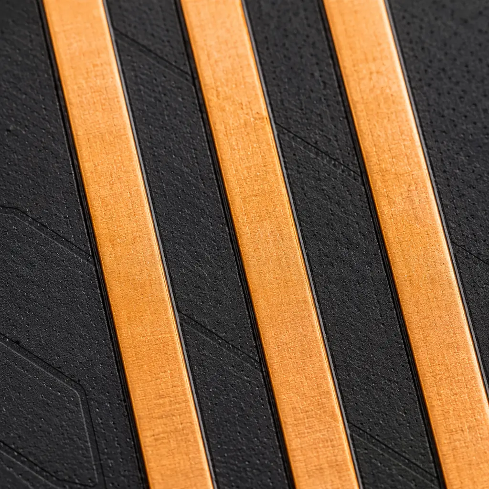
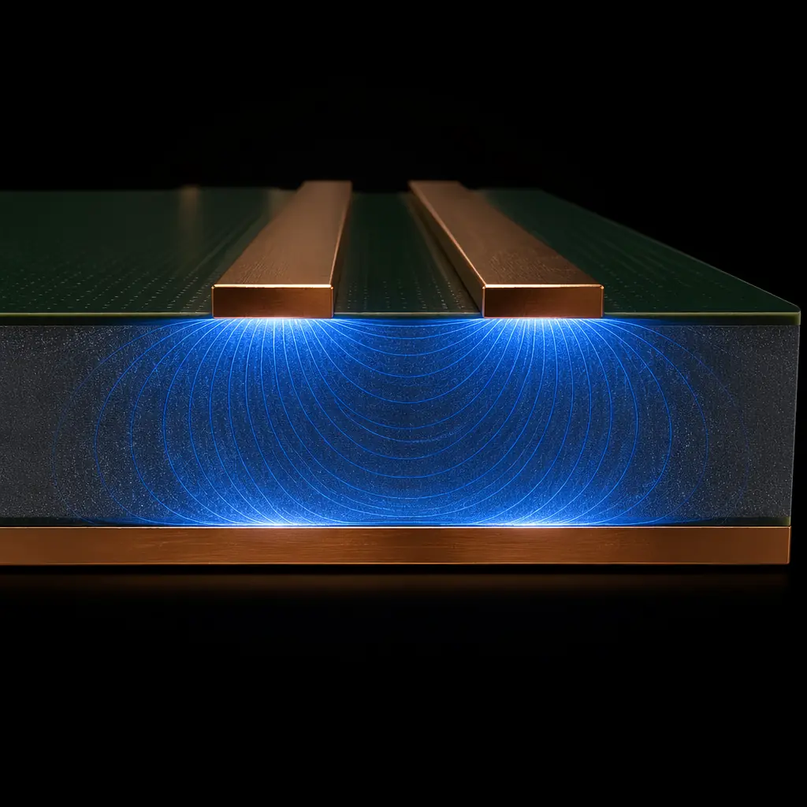

Crosstalk is the unintended electromagnetic coupling between adjacent signal traces on a PCB. At 100 MHz, a 100 mm parallel run with 0.15 mm spacing might couple 2–3% of the aggressor signal into the victim — an annoyance. At 10 Gbps with sub-nanosecond rise times, the same geometry couples 15–25%, turning a clean signal into an unrecognizable waveform. This guide explains the two distinct physical mechanisms of crosstalk — near-end (NEXT) and far-end (FEXT) — and gives you the design rules to suppress each by 20 dB or more.
At Huaxing PCBA, we manufacture high-speed PCBs with ±5% impedance control across up to 32 layers, supporting signal integrity-sensitive designs for data centers, AI accelerators, and telecom infrastructure. Our impedance control process includes TDR verification on every panel.

The Two Faces of Crosstalk: NEXT and FEXT
Crosstalk has two distinct physical mechanisms that produce different waveforms at different ends of the victim trace. Mixing them up leads to applying the wrong fix — guard traces that suppress NEXT but do nothing for FEXT, or termination schemes that fix one while amplifying the other.
Near-End Crosstalk (NEXT): The Sum of Capacitive and Inductive Coupling
NEXT is the noise measured at the victim trace end closest to the aggressor driver. It is the sum of capacitive coupling (through the electric field between traces) and inductive coupling (through the magnetic field around the aggressor). Because both coupling mechanisms produce noise that propagates backward toward the near end, they add constructively. NEXT amplitude is proportional to the mutual capacitance and mutual inductance per unit length, and its pulse width is approximately twice the propagation delay of the coupled length — meaning a 100 mm coupled region produces a NEXT pulse roughly 1 ns wide on FR-4. For a deep dive into the field theory, see our PCB signal integrity guide.
Far-End Crosstalk (FEXT): The Difference That Makes It Tricky
FEXT is the noise at the far end of the victim trace. Unlike NEXT, capacitive and inductive coupling produce FEXT components with opposite polarity — capacitive coupling drives forward, inductive coupling drives backward relative to the direction of propagation. In a homogeneous dielectric (stripline), these two components cancel exactly, and FEXT is theoretically zero. In microstrip, where the electric field partially exists in air (Dk ≈ 1) and partially in the substrate (Dk ≈ 4), the cancellation is incomplete, and FEXT becomes significant — typically 5–10% of the aggressor amplitude for a 100 mm coupled run at 10 Gbps edge rates. This is why layer stackup design — specifically stripline vs microstrip routing — directly determines your FEXT budget.
Rule of Thumb: NEXT amplitude is independent of coupled length for lengths greater than the rise-time equivalent — a 50 mm and 500 mm parallel run produce the same NEXT peak. FEXT amplitude grows linearly with coupled length. This is why long parallel buses (DDR, PCIe lanes) are FEXT-limited, not NEXT-limited.
Crosstalk Mechanisms: Capacitive vs Inductive Coupling
Every pair of adjacent traces forms a parasitic capacitor and a parasitic transformer. Understanding which mechanism dominates at your geometry and frequency tells you which mitigation to apply.
| Parameter | Capacitive Coupling | Inductive Coupling |
|---|---|---|
| Physical origin | Electric field between traces | Magnetic field around aggressor |
| Depends on | Trace width, spacing, Dk | Trace length, loop area, current |
| Dominates when | High-impedance circuits (>100 Ω) | Low-impedance circuits (<50 Ω) |
| Frequency dependence | Increases with dV/dt | Increases with dI/dt |
| Mitigation | Increase spacing, ground fill | Reduce loop area, twist pairs |
| Effect on NEXT | Adds to inductive coupling | Adds to capacitive coupling |
| Effect on FEXT | Forward coupling (+) | Backward coupling (−) |
At typical PCB geometries — 0.1 mm trace width, 0.15 mm spacing, 35 µm copper thickness — the mutual capacitance between two microstrip traces is approximately 3–5 pF per 100 mm, and the mutual inductance is 15–25 nH per 100 mm. These values produce a NEXT coefficient (the ratio of victim voltage to aggressor voltage) of 5–15% for a 100 mm parallel run with 200 ps rise time. For mixed-signal designs where crosstalk couples digital noise into analog front-ends, read our mixed-signal PCB design guide.

Guard Traces: When They Work and When They Don't
Inserting a grounded trace between aggressor and victim — a guard trace — is the most common crosstalk mitigation technique. But guard traces are not a universal solution. Their effectiveness depends entirely on the grounding architecture:
Guard Trace With Stitching Vias: Effective for NEXT and FEXT
A guard trace connected to the ground plane with stitching vias every λ/10 (approximately every 5 mm at 10 GHz, or every 15 mm at 3 GHz) creates a low-impedance return path that shunts both capacitive and inductive coupling to ground. At 1 Gbps edge rates, a guard trace with vias at 10 mm pitch reduces NEXT by 12–18 dB and FEXT by 8–12 dB compared to the same spacing without a guard. The physics: the guard trace presents a lower impedance path to ground than coupling through the victim trace, diverting >90% of the coupled energy.
Floating Guard Trace: Can Make Crosstalk Worse
A guard trace that is not grounded — or grounded only at the ends with no stitching vias along its length — acts as a resonant structure. At the frequency where its electrical length equals λ/4, the floating guard becomes a high-Q resonator that couples energy from the aggressor and re-radiates it to the victim with gain. Measured data shows a floating guard trace can increase NEXT by 3–6 dB at resonance compared to having no guard trace at all. The rule: a guard trace must have stitching vias, or it is worse than useless. For designs that cannot fit stitching vias, use spacing instead — our PCB EMC/EMI compliance guide covers alternative suppression techniques.
Guard Trace Width: 3× the Minimum Trace Width Rule
For a guard trace to be an effective shield, its width should be at least 3× the aggressor/victim trace width. A narrow guard trace (equal to signal trace width) diverts only 30–40% of the coupled field — the rest wraps around it. A guard trace 3× wider diverts >85% because it creates a wider equipotential surface that blocks the majority of fringing field lines. The trade-off is routing density: every guard trace consumes board area equivalent to 3 signal traces. In high-density designs like HDI PCBs, guard traces compete directly with escape routing from fine-pitch BGAs.
Differential Pair Spacing: The 3W Rule and Beyond
Differential signaling is inherently immune to common-mode crosstalk — the equal coupling to both lines of a pair appears as a common-mode voltage that the differential receiver rejects. But differential pairs are not immune to differential-mode crosstalk, which occurs when the spacing between pairs is insufficient:
The 3W Rule: Space Between Pairs ≥ 3× Trace Width
The "3W rule" states that the edge-to-edge spacing between two differential pairs should be at least 3 times the trace width of a single line. For a 0.1 mm trace, this means 0.3 mm between pairs. At 3W spacing, differential-mode crosstalk is typically below 1% (−40 dB) at 5 Gbps. Tightening to 2W raises crosstalk to 3–5% (−26 to −30 dB) — still acceptable for many interfaces. Going below 1.5W pushes differential crosstalk above 10% (−20 dB), which will close the eye at 10 Gbps NRZ. For practical routing examples, see our trace width design guide.
Layer Stackup Strategies for Crosstalk Suppression
The single most powerful crosstalk mitigation is not a routing rule — it is a stackup decision. Moving a critical signal from microstrip to stripline changes the crosstalk physics fundamentally:
| Routing Layer Type | NEXT Coefficient | FEXT Coefficient | Notes |
|---|---|---|---|
| Microstrip (top/bottom) | 8–15% | 4–8% | Inhomogeneous dielectric → FEXT non-zero |
| Stripline (symmetric) | 5–10% | <0.5% | Homogeneous dielectric → FEXT near-zero |
| Dual stripline (broadside) | 12–20% | 6–12% | Broadside coupling is WORSE than microstrip |
| Embedded microstrip | 7–12% | 2–5% | Solder mask acts as thin dielectric overlay |
For a PCIe Gen4 or Gen5 link where FEXT is the dominant impairment (long parallel lanes, 16 GT/s), routing on symmetric stripline layers is the correct choice — FEXT drops to near zero, and the remaining NEXT is managed by pair-to-pair spacing. For 25 Gbps SerDes lanes, the additional insertion loss of stripline (longer vias, more dielectric loss) may outweigh the crosstalk benefit, and microstrip with aggressive 4W spacing becomes the better trade-off. See our data center server PCB guide for high-speed routing at scale.
Design Rule: If you can budget 2 additional layers in your stackup, converting two microstrip layers to stripline reduces system-level crosstalk by 10–15 dB — often the difference between a passing and failing BER (bit error rate) test. The layer cost ($5–10 per layer for a 200×200 mm board) is far cheaper than the 2–3 design spins that crosstalk problems typically require.
Crosstalk Budgeting: How Much Is Acceptable?
Every high-speed interface has a crosstalk tolerance specified in its compliance standard. Designing to these limits — rather than blindly minimizing crosstalk — optimizes cost and routing density:
| Interface | Data Rate | Max Crosstalk (ICN) | Equivalent NEXT |
|---|---|---|---|
| DDR4 | 3.2 GT/s | 4.0 mV (ICN) | ~3% of Vswing |
| DDR5 | 6.4 GT/s | 2.5 mV (ICN) | ~1.5% of Vswing |
| PCIe Gen4 | 16 GT/s | 1.5 mV RMS | ~1% of Vswing |
| PCIe Gen5 | 32 GT/s | 1.0 mV RMS | ~0.7% of Vswing |
| 100G Ethernet (CAUI-4) | 25 Gbps/lane | 0.7 mV RMS | ~0.5% of Vswing |
DDR5's tighter crosstalk budget (37% lower than DDR4) is the reason DDR5 motherboards universally use stripline routing for the data bus — microstrip cannot meet the ICN limit at 6.4 GT/s. If your design pushes up against these limits, read our PCB failure analysis guide for signal integrity debugging techniques.
Crosstalk is not a mystery — it is a predictable, calculable electromagnetic phenomenon. Understanding the difference between NEXT (sum of coupling) and FEXT (difference of coupling), knowing when guard traces work (with stitching vias) and when they backfire (floating), and making the right microstrip vs stripline decision for your data rate gives you complete control over signal quality. Start with your stackup: routing critical buses on symmetric stripline eliminates FEXT. Then apply the 3W spacing rule and stitch your guard traces. The result is a PCB that meets PCIe Gen5 and DDR5 crosstalk budgets on the first spin. For the companion topic, see our DFT guide on verifying crosstalk performance through boundary scan and built-in self-test, or contact our engineering team for a stackup review of your next high-speed design.